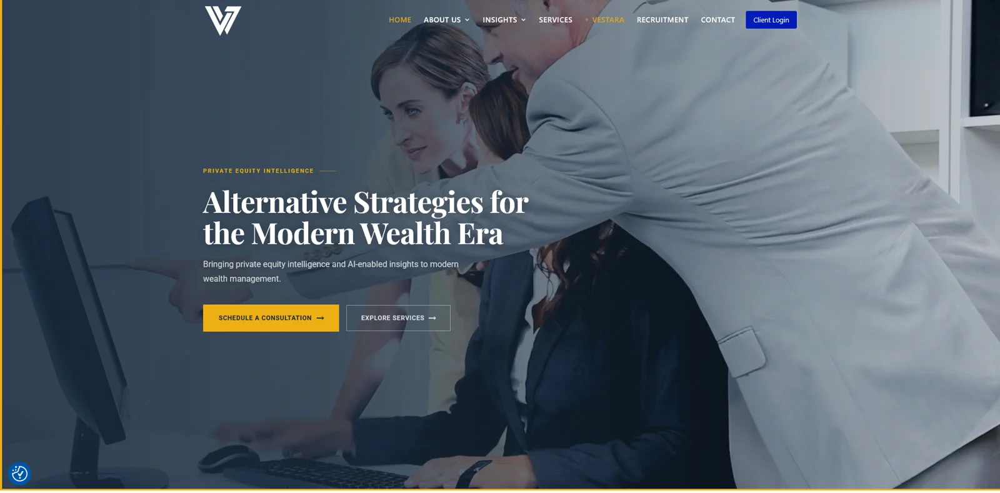
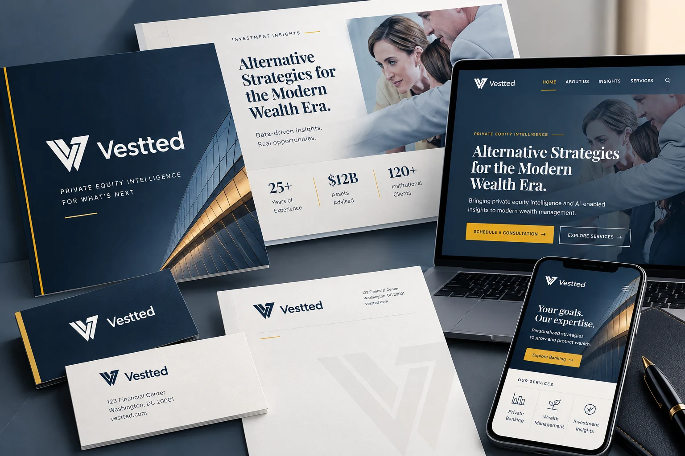

Executive narrative
Large editorial titles, clear messaging, and disciplined white space.

VesttedSELECTED WORK / BRAND IDENTITY & EXECUTIVE COMMUNICATIONS
A refined serif-and-sans design direction applied to executive presentations, banking forms, accessible digital experiences, print collateral, and reusable brand templates.
PROJECT OVERVIEW
This self-initiated design exploration extends the Vestted website context into a premium, finance-inspired communications system. The attached banking visual identity prototype is the basis for the design examples shown below.
The direction pairs expressive Playfair Display headings with highly readable Inter text, a midnight-navy and warm-ivory palette, and restrained brass-gold accents.
Scope: identity, board presentations, forms and disclosures, website concepts, print pieces, and governance guidelines.
Portfolio transparency: The supplied prototype originally used a fictional bank name and sample financial data. These mockups use the Vestted name as a conceptual brand application; they do not represent approved banking products, actual financial results, or bank-issued materials.
01 / BRAND IDENTITY & TYPOGRAPHY
A disciplined hierarchy pairs expressive serif headlines with clean, accessible utility typography. The actual Vestted angular V mark anchors the system.
Alternative strategies.
Clear perspectives.
Private equity intelligence · modern wealth
Trust is built
in the
details.
An editorial serif establishes confidence, while a precise sans-serif supports dense data, forms, and responsive interfaces.
Aa Bb Cc Dd Ee Ff 0123456789
Palette values are approximated from the supplied Vestted website screenshot for this concept, not presented as official brand specifications.
02 / EXECUTIVE & INVESTOR PRESENTATIONS
A modular presentation system turns financial analysis into board-ready narratives, from opening statements and key metrics to recommendations.
Large editorial titles, clear messaging, and disciplined white space.
Consistent data labels, aligned tables, and accessible charts.
Recommendations, risks, and next steps presented for quick review.
03 / DOCUMENTS, FORMS & DISCLOSURES
Conceptual customer and internal documents demonstrate controlled typography, consistent labels, usable fields, and version management.
Please complete the fields below. Required fields are indicated in the final production form.
CONCEPT SAMPLE · NOT A LEGAL OR APPROVED FORM
Summarize strategic priorities in a consistent, readable, controlled format suitable for review and distribution.
Document ID · Owner · Revision date · Approval status
04 / ACCESSIBLE DIGITAL EXPERIENCE
The actual Vestted website provides the visual reference. The broader concept explores accessible navigation, clear calls to action, and mobile-friendly form patterns.

Distinctive serif headings paired with concise sans-serif descriptions and clear section labels.
Design intent includes keyboard-visible states, labeled inputs, and specific validation messages.
Contrast, zoom, responsive reflow, keyboard order, and screen-reader behavior require implementation testing.
05 / PRINT & CORPORATE COLLATERAL
Conceptual stationery and branded materials extend the Vestted mark and restrained visual system beyond the screen.
PRIVATE EQUITY INTELLIGENCE
FOR WHAT’S NEXT
Business card / front. A confident navy field and white angular mark, with a restrained yellow accent.
Client Relations
Concept contact card
vestted.com
Business card / reverse. Legible hierarchy and generous negative space.

The mockup above is an AI-generated conceptual visualization. Its figures, contact details, and interface text are illustrative, not actual Vestted collateral or claims.
06 / DESIGN SYSTEM & GOVERNANCE
Reusable foundations and practical rules help other associates create on-brand materials without starting from scratch.
color.brand.navy#142B40color.action.yellow#F2B713
color.brand.slate#34485ADisplay: editorial serif · Utility: accessible sans serif · Spacing: 8 / 16 / 24 / 40 / 64
01 Start with approved master layouts
02 Use shared styles, components, and templates
03 Confirm content ownership and version history
04 Check accessibility and print specifications
05 Route changes through brand review
VESTTED_BOARD-DECK_Q4-26_v1.0_CONCEPT.pptx07 / DESIGN APPROACH & TAKEAWAYS
Repeatable layout and typography patterns help audiences scan complicated financial narratives.
Intentional contrast, responsive behavior, and labeled components guide implementation and quality assurance.
Governed templates and defined specifications support consistent output across departments and vendors.
EXPLORE MORE
Lionchase Brand Identity ↗ · Executive Presentations ↗ · All Projects ↗